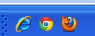

Buscar en la web.
Práctica.
La práctica de hoy consistirá en asentar conceptos vistos en clases anteriores, realizando nuevas búsquedas y visitando nuevas páginas web. Me gustaría que preguntarais cualquier duda que os surja.
1. Acceso al navegador.
- Abre uno de los tres navegadores que tenemos instalados en el equipo: Internet Explorer, Google Chrome o Mozilla Firefox.
- Desde la barra de navegación, introduce la siguiente URL: http://www.google.es.
- Antes de continuar, te recomiendo que sigas la recomendación que hemos comentado en el curso, que es no mantener más de 4 ventanas de navegador abiertas al mismo tiempo. Si se abren más, dedica un momento a organizar las ventanas.
2. Visitemos webs interesantes.
Hay miles y miles de páginas interesantes en Internet que todavía no hemos descubierto, y depende de nosotros y nuestros intereses el encontrar la página con la información que nos resulte más interesante.
Preguntas
- Busca el cuadro de "El nacimiento de Venus" del museo de los Ufizzi, Florencia, en Google Art Project.
- ¿Puedo descargar las imágenes del Google Art Project? ¿Por qué no?
- En Google Maps, ¿puedes calcular cuánta gasolina gastaré aproximadamente si quiero ir de Sagunto a Benidorm?
3. Trucos de escritorio.
- Busca una imagen interesante por la web, descárgala, y ponla como fondo de escritorio.
- Crea un acceso directo a los navegadores en el escritorio.
4. Buscando con Google.
- ¿Cuáles son las farmacias de guardia de este fin de semana en Sagunto?
- ¿Cuál es la dirección y teléfono del restaurante La Manduca de Benicàssim?
- ¿Es posible pedir cita para renovar el DNI a través de Internet?
- ¿Puedes buscar la cartelera de los cines Neocine de Castellón?
- ¿Puedes buscar los horarios y precios del tren Castellón-Sagunto para este sábado?
- ¿Sabrías encontrar los horarios y precios para visitar el Museo del Prado el fin de semana?